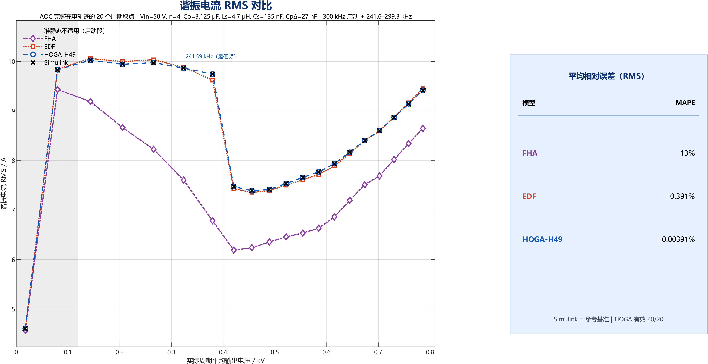
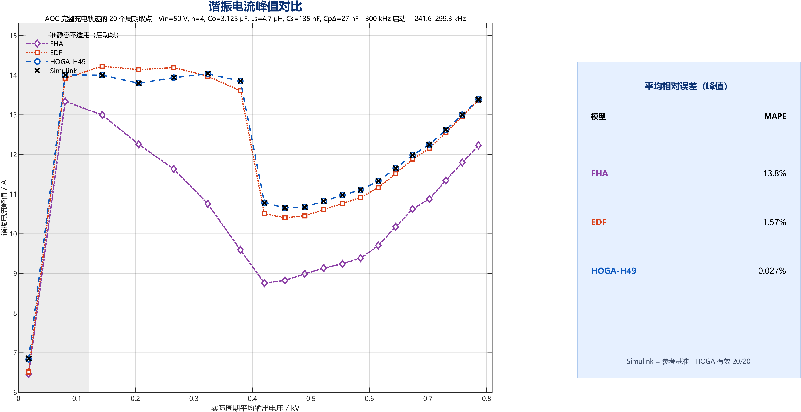
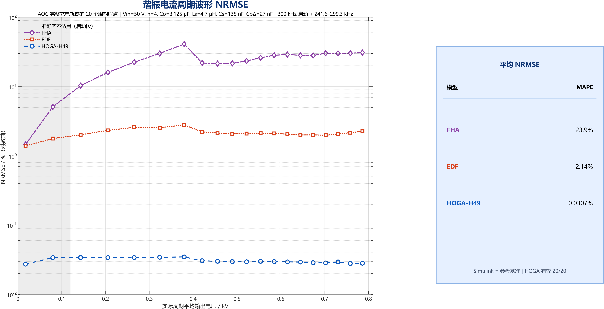

归档说明：本文是原项目报告的公开归档版；数值与结论未改，仅将本机绝对路径替换为占位符、把图片指向本仓库reports/accuracy_figures/。原文中未随包迁移的内部 CSV/目录链接可能失效；可复现数据以data/与docs/08_文件与证据索引.md为准。
三相 LCC 在 241.59 kHz AOC 策略下的 20 点全过程精度验证（加密版）
2026-10-24｜50 V 输入、0→800 V、AOC 变频（300 kHz 启动 + 241.6–299.3 kHz 主段）、20 个时间等分工作点｜HOGA-H49 / EDF / FHA vs Simulink 冻结输出电压参考
摘要
在 10 点版本的基础上把时间等分从 10 段加密到 20 段，逐点重做冻结 Simulink 参考与三模型求解。AOC 充电段本身不变（59 节点表，t800 = 2.153487 ms，旧 280 kHz 表为 2.596206 ms）。
20 点全部有效（HOGA 20/20）：
| 指标 MAPE | HOGA-H49 | EDF | FHA |
|---|---|---|---|
| 三相平均 RMS | 0.00391% | 0.391% | 13.027% |
| 平均输出电流 Io | 0.00566% | 0.349% | 10.921% |
| 三相峰值 | 0.0270% | 1.573% | 13.784% |
| 波形 NRMSE 均值 | 0.0307% | 2.138% | 23.851% |
加密后 200–400 V 区间由原来的空白变为 143.1 / 205.4 / 265.4 / 323.6 / 379.4 V 五个有效点；全程最低频点 379.4 V / 241.59 kHz 也通过：HOGA 的 RMS/Io 误差为 0.0059%/0.0098%，而 EDF 在该点恶化到 1.256%/1.171%，FHA 达到 30.4%/17.5%。
1. 与 10 点版本的关系
- 采样规则不变：
[0, t800]等分取每段中点，只是段数从 10 改为 20； - 20 点不是原 10 点的超集，所有点的时刻都变了（例如原 47.9 V 点现在对应 17.4 V 与 79.8 V 两点）；
- 10 点版本完整保留在
_10point_v1/； - 旧 280 kHz 策略仍归档在
_superseded_min280kHz/与aoc_feasibility_20261017/data/_min280kHz_superseded/。
2. 二十个点
| # | t/ms | Vo/V | fs/kHz | dV/周期 | 模态 | HOGA |
|---|---|---|---|---|---|---|
| 1 | 0.0538 | 17.4 | 300.0 | 6.99% | 启动段 | 有效 |
| 2 | 0.1615 | 79.8 | 243.7 | 3.02% | 三管 | 有效 |
| 3 | 0.2692 | 143.1 | 243.7 | 1.68% | 三管 | 有效 |
| 4 | 0.3769 | 205.4 | 244.6 | 1.13% | 三管 | 有效 |
| 5 | 0.4845 | 265.4 | 244.2 | 0.85% | 三管 | 有效 |
| 6 | 0.5922 | 323.6 | 243.7 | 0.67% | 三管 | 有效 |
| 7 | 0.6999 | 379.4 | 241.6 | 0.55% | 三管 | 有效 |
| 8 | 0.8076 | 420.4 | 272.3 | 0.30% | 两管 | 有效（延拓修复） |
| 9 | 0.9152 | 455.6 | 276.5 | 0.25% | 两管 | 有效 |
| 10 | 1.0229 | 489.2 | 280.0 | 0.22% | 两管 | 有效 |
| 11 | 1.1306 | 521.9 | 280.0 | 0.20% | 两管 | 有效 |
| 12 | 1.2383 | 553.7 | 279.0 | 0.19% | 两管 | 有效 |
| 13 | 1.3459 | 584.9 | 279.0 | 0.17% | 两管 | 有效 |
| 14 | 1.4536 | 615.1 | 281.8 | 0.16% | 两管 | 有效 |
| 15 | 1.5613 | 644.7 | 286.6 | 0.15% | 两管 | 有效 |
| 16 | 1.6690 | 673.7 | 290.4 | 0.14% | 两管 | 有效 |
| 17 | 1.7766 | 702.3 | 290.4 | 0.13% | 两管 | 有效 |
| 18 | 1.8843 | 730.5 | 293.9 | 0.12% | 两管 | 有效 |
| 19 | 1.9920 | 758.5 | 296.9 | 0.11% | 两管 | 有效 |
| 20 | 2.0996 | 786.2 | 299.3 | 0.11% | 两管 | 有效 |
3. 结果
3.1 谐振电流 RMS

| # | Vo/V | Sim RMS/A | H49 ε | EDF ε | FHA ε |
|---|---|---|---|---|---|
| 1 | 17.4 | 4.608 | 0.0019% | 0.035% | 0.85% |
| 2 | 79.8 | 9.831 | 0.0027% | 0.122% | 4.06% |
| 3 | 143.1 | 10.024 | 0.0034% | 0.347% | 8.32% |
| 4 | 205.4 | 9.941 | 0.0034% | 0.556% | 12.82% |
| 5 | 265.4 | 9.975 | 0.0033% | 0.594% | 17.54% |
| 6 | 323.6 | 9.864 | 0.0051% | 0.175% | 22.91% |
| 7 | 379.4 | 9.744 | 0.0059% | 1.256% | 30.39% |
| 8 | 420.4 | 7.474 | 0.0012% | 0.598% | 17.16% |
| 9 | 455.6 | 7.390 | 0.0021% | 0.435% | 15.55% |
| 10 | 489.2 | 7.414 | 0.0039% | 0.299% | 14.26% |
| 11 | 521.8 | 7.536 | 0.0037% | 0.443% | 14.27% |
| 12 | 553.7 | 7.658 | 0.0053% | 0.618% | 14.64% |
| 13 | 584.9 | 7.770 | 0.0038% | 0.670% | 14.60% |
| 14 | 615.1 | 7.936 | 0.0042% | 0.545% | 13.51% |
| 15 | 644.7 | 8.166 | 0.0056% | 0.283% | 11.87% |
| 16 | 673.7 | 8.405 | 0.0035% | 0.047% | 10.64% |
| 17 | 702.3 | 8.603 | 0.0038% | 0.116% | 10.61% |
| 18 | 730.5 | 8.870 | 0.0068% | 0.103% | 9.58% |
| 19 | 758.5 | 9.144 | 0.0038% | 0.249% | 8.77% |
| 20 | 786.2 | 9.419 | 0.0048% | 0.325% | 8.19% |
3.2 平均输出电流 Io

| # | Vo/V | Sim Io/A | H49 ε | EDF ε | FHA ε |
|---|---|---|---|---|---|
| 1 | 17.4 | 0.8767 | 0.0001% | 0.275% | 1.51% |
| 2 | 79.8 | 1.8488 | 0.0045% | 0.172% | 0.80% |
| 3 | 143.1 | 1.8377 | 0.0056% | 0.235% | 3.30% |
| 4 | 205.4 | 1.7726 | 0.0030% | 0.306% | 6.48% |
| 5 | 265.4 | 1.7311 | 0.0075% | 0.297% | 10.61% |
| 6 | 323.6 | 1.6595 | 0.0022% | 0.029% | 16.13% |
| 7 | 379.4 | 1.5837 | 0.0098% | 1.171% | 25.37% |
| 8 | 420.4 | 1.0646 | 0.0015% | 0.478% | 10.45% |
| 9 | 455.6 | 1.0024 | 0.0027% | 0.371% | 9.84% |
| 10 | 489.2 | 0.9579 | 0.0001% | 0.278% | 9.49% |
| 11 | 521.8 | 0.9372 | 0.0009% | 0.411% | 11.07% |
| 12 | 553.7 | 0.9173 | 0.0073% | 0.607% | 13.66% |
| 13 | 584.9 | 0.8913 | 0.0089% | 0.689% | 15.90% |
| 14 | 615.1 | 0.8678 | 0.0070% | 0.589% | 15.61% |
| 15 | 644.7 | 0.8507 | 0.0022% | 0.334% | 13.27% |
| 16 | 673.7 | 0.8366 | 0.0164% | 0.095% | 11.56% |
| 17 | 702.3 | 0.8251 | 0.0104% | 0.195% | 13.18% |
| 18 | 730.5 | 0.8164 | 0.0134% | 0.039% | 11.37% |
| 19 | 758.5 | 0.8090 | 0.0074% | 0.171% | 9.92% |
| 20 | 786.2 | 0.8026 | 0.0021% | 0.234% | 8.91% |
Io 与 RMS 的排序、量级完全一致：HOGA 最大单点 0.0164%（673.7 V），EDF 最大 1.171%（379.4 V），FHA 最大 17.5%。
3.3 峰值与 NRMSE


- 峰值 MAPE：H49 0.0270%、EDF 1.573%、FHA 13.784%；
- NRMSE：H49 0.0307%、EDF 2.138%、FHA 23.851%。
4. 误差随电压的规律
- HOGA 全程平坦：20 点 RMS 误差 0.0012–0.0068%，Io 0.0001–0.0164%，从 17 V 启动段到 786 V、从 300 kHz 到 241.59 kHz 都没有趋势性恶化。
- EDF 在最低频点最差：多数点 0.1–0.6%，但在 379.4 V / 241.59 kHz 跳到 1.256%/1.171%。这是全表最低频、相峰值接近 14 A 的工况，基波假设的误差被放大。
- FHA 在低压大电流段崩溃：79.8 V 时 4.1%，143 V 8.3%，205 V 12.8%，265 V 17.5%，324 V 22.9%，379 V 30.4%；进入两管区（420 V 以上）后回落到 17% → 8%。FHA 的失效主要是整流端口等效，而不是单纯谐波。
- 17.4 V 启动点：三模型误差都不大（HOGA 0.0019%），但该点不满足准稳态（每周期 7% 电压变化），见 §5。
5. 准稳态边界
transient_vs_frozen.csv 对比真实 AOC 充电周期与冻结波形：
| # | dV/周期 | RMS 差 | Io 差 | 判定 |
|---|---|---|---|---|
| 1 | 6.99% | 42.17% | 43.85% | 不满足 |
| 2 | 3.02% | 4.73% | 4.88% | 不满足 |
| 3 | 1.68% | 0.59% | 0.67% | 边缘 |
| 4 | 1.13% | 0.66% | 0.74% | 边缘 |
| 5 | 0.85% | 0.44% | 0.50% | 可接受 |
| 6 | 0.67% | 0.32% | 0.40% | 可接受 |
| 7–20 | ≤0.55% | 0.02–0.15% | 0.07–0.29% | 成立 |
- 第 1、2 点（17.4 V、79.8 V）冻结参考与真实充电周期差 42%/4.7%，不能作为精度结论，只能看波形形状；
- 第 3、4 点（143、205 V）差 0.6–0.7%，属边缘；
- 第 5 点起误差 ≤0.5%，第 7 点起 ≤0.15%。
6. 求解说明
- P03/P04（10 点版）与 P07/P08（20 点版）都落在 240–280 kHz 的模式转换带；本轮通过归档解作种子 + 两参数连续延拓让 H49 进入正确分支：
- P07（379.4 V / 241.59 kHz）：用 400 V/240 kHz 的 H49 归档解直接作种子通过；
- P08（420.4 V / 272.27 kHz）：从 P09（455.6 V/276.5 kHz）沿两管支路降压、降频 4 步通过。
- 20 点全部通过十项验收，无
valid=false。 - 加密并没有“让边界消失”：它只是让采样点分布更密，使个别边界点即使失败也只影响很窄的电压段；本轮通过补种子把边界点也解出来了。
7. 结论
- 20 点、HOGA 20/20 有效：RMS MAPE 0.00391%、Io 0.00566%、峰值 0.0270%、NRMSE 0.0307%。
- 加密后 200–400 V 不再是空白，五个点全部有效；最低频 241.59 kHz 点也有效。
- Io 与 RMS 结论一致，未出现“RMS 好、Io 差”的分裂。
- EDF 在最低频点误差升到约 1.2%，其余点 0.03–0.7%；FHA 在低压大电流段误差 4–30%，两管区回落到 8–17%。
- 准稳态适用域：第 1、2 点不成立，第 3、4 点边缘，第 5 点起可用。
- 边界点的可解性依赖种子质量，而不是采样密度；加密解决的是“曲线覆盖”，不是“边界拓扑”。
8. 边界
- 参考为理想开关 Simulink（1e-6 Ω、0.6 V 二极管、零死区、无 Coss/寄生），不是实验；
- 14 A / 频率窗口为研究情景；损耗未回馈电路；
- 20 点覆盖主充电段，不含 0–17 V 与 786–800 V 的末端；
- HOGA 仅 H49，未做阶数收敛；
- 冻结参考数值平台差约 15 μA / 0.2 mA，HOGA 的 RMS 误差已接近该量级。
附录：文件
| 内容 | 路径 |
|---|---|
| 10 点旧版 | _10point_v1/ |
| 旧 280 kHz 归档 | _superseded_min280kHz/ |
| 充电轨迹 | data/charge/aoc_charge_trace.mat |
| 20 点 | data/points/selected_points.csv |
| 冻结参考 | data/frozen/P*.mat |
| 三模型 | data/models/*_P*.mat |
| 统计 | data/points/accuracy_10points.csv、accuracy_summary.csv |
| 瞬态对照 | data/points/transient_vs_frozen.csv |
| 图 | figures/fig1..fig4（PNG+PDF） |
| 边界点修复 | scripts/fix_p03.m、fix_p08.m |
cd('.../charging_trajectory_AOC_10point_validation/scripts');
select_points(20); run_frozen_campaign('coarse',1:20);
run_models_campaign; fix_p08; transient_check; analyze_accuracy; plot_comparison_figures;